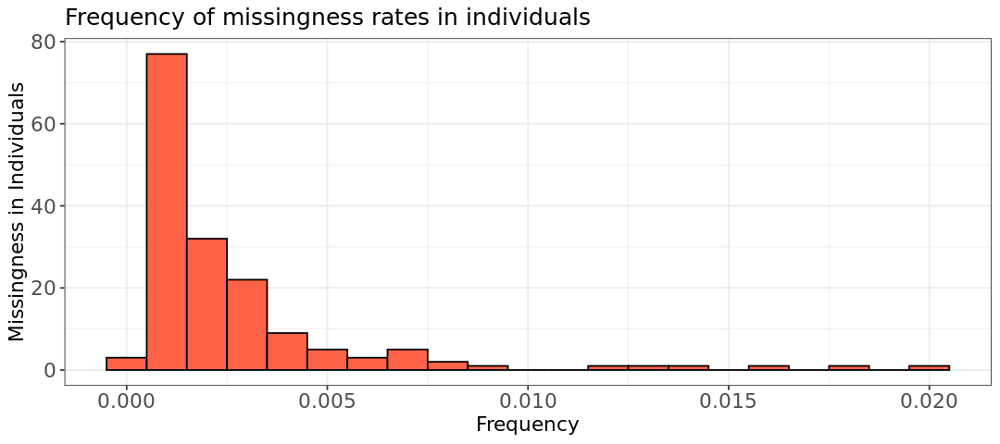

ln -sf ../Data
mkdir -p Results/GWAS3Quality Control: initial steps
Important notes for this notebook
After gathering your data and genotyping, there are many checks to do to determine the quality of the data. It is crucial to perform quality control before carrying out any GWAS, otherwise, there is the risk that some of the associations are spurious.
Learning outcomes
- Distinguish the various QC steps
- Discuss and choose thresholds on plink
- Implement basic QC in
plinkand statistical plots inR - Hypothesize the effects of various
plinkcommands and verify your hypothesis using the analysis inR
How to make this notebook work
- In this notebook, we will use both
Randbash command lineprogramming languages. Remember to change the kernel whenever you transition from one language to the other (Kernel --> Change Kernel) indicated by the languages’ images. We will first runBashcommands.
 Choose the Bash kernel
Choose the Bash kernel
The next critical step in any GWAS involves scrutinizing the data for potential issues. It’s crucial to ensure that the results are not merely artifacts of poor data quality discovered after the analysis.
After gathering your data and genotyping, there are many checks one can do to determine the quality of the data. PLINK provides several summary statistics for quality control (e.g. missing genotype rate, minor allele frequency, and Hardy-Weinberg equilibrium failures) which will serve as thresholds for subsequent analyses.
For this tutorial, we will look at the following topics:
- Individual Missingness
- Sex discrepancy
- Minor Allele Frequency (MAF)
- Hardy-Weinberg Equilibrium (HWE)
- Heterozygosity Rate
Individual and SNP Missingness
Missingness per SNP
Overall, the SNP genotyping platform is very reliable and delivers stable results when it comes to determining genotypes. Of course, it is not flawless. One of the most frequent problems is that some of the SNPs are just not well-genotyped in the entire population. These should be removed to improve the overall data quality.
Certainly, we can’t remove every SNP with any missing values, as that would result in losing a significant portion of our data. Instead, we adopt some thresholds. However, determining these thresholds isn’t governed by strict rules. You have the flexibility to set them within “reasonable” limits. To find out what constitutes “reasonable,” consulting relevant literature for your species of interest is advisable. For humans, a common starting point is a threshold of 0.2, meaning we exclude SNPs where 20% or more of the genotypes are missing in our population.
Missingness per individual
The reliability of SNP chips is also high when it comes to individual genotypes. In some cases, however, some of the individuals contain a large number of missing SNPs. The reason could be low DNA sample quality, the wrong chip type used (e.g. cattle chip for deer samples), or other technical issues. Regardless of the reason, you should remove the worst offenders from your data set, to not compromise the overall quality of your results.
Stop - Read - Solve
Have a look at the following toy example:
| / | SNP1 | SNP2 | SNP3 | SNP4 | SNP5 |
|---|---|---|---|---|---|
| IND1 | 22 | 00 | 11 | 12 | 22 |
| IND2 | 22 | 00 | 11 | 12 | 22 |
| IND3 | 11 | 12 | 11 | 22 | 21 |
| IND4 | 00 | 00 | 11 | 11 | 00 |
| IND5 | 22 | 00 | 11 | 22 | 22 |
Here, we have a data set of five individuals, each of them genotyped for five SNPs. The genotypes themselves are in numerical coding, 11 and 22 being the two homozygous, 12 the heterozygous, and 00 coded as missing. We want to apply two filters: one for the variants, and one for the individuals.
- First remove variants with >= 40% missingness
- Then remove individuals with >= 40% missingness
Which variants and individuals are we removing?
In practice, you want to remove the SNPs based on missingness before the individuals. This is simply because we generally have a lot more SNPs than individuals, and would thus lose less information by removing SNPs than individuals. This will remove “bad” SNPs first, leaving a lower rate of missingness for all the individuals.
Solution
Variant-level threshold: In this example, we would only remove SNP2 since it exceeds this threshold, with 80% missingness (4 out of 5 missing values).
Individual-level threshold: IND4 is removed from the data set, as there is missing genotype information for 2/4 = 50% SNPs (after filtering out SNP2).
First run of the PLINK tool
Using PLINK, we can address missing data using two functions; one operates at the variant level and the other at the individual level:
--geno: This will remove SNPs with a specified proportion of missingness (e.g.--geno 0.01will remove SNPs with 1% missingness).--mind: This will remove individuals with a specified proportion of missingness (e.g.--mind 0.01will remove individuals with 1% missingness).
A common threshold for –mind and –geno ranges from 1% to 5% to ensure quality and robustness. Higher thresholds may be acceptable if the study has a large sample size and missingness is not widespread. Those filters must run one at a time in PLINK.
Let’s implement our first QC method in PLINK.
 We use
We use ln -sf to link the data folder and create a folder for output files (Results/GWAS3)
PLINK program uses options implemented using the -- symbol to perform different functions or access files. We will use the option --bfile for data (filename without extension), --missing for missing data summary, and --out for output prefixes. This helps us analyze data missingness.
plink --bfile Data/HapMap_3_r3_1 --missing --out Results/GWAS3/dataPLINK v1.90b6.21 64-bit (19 Oct 2020) www.cog-genomics.org/plink/1.9/
(C) 2005-2020 Shaun Purcell, Christopher Chang GNU General Public License v3
Logging to Results/GWAS3/data.log.
Options in effect:
--bfile Data/HapMap_3_r3_1
--missing
--out Results/GWAS3/data
385567 MB RAM detected; reserving 192783 MB for main workspace.
1457897 variants loaded from .bim file.
165 people (80 males, 85 females) loaded from .fam.
112 phenotype values loaded from .fam.
Using 1 thread (no multithreaded calculations invoked).
Before main variant filters, 112 founders and 53 nonfounders present.
Calculating allele frequencies... done.
Warning: 225 het. haploid genotypes present (see Results/GWAS3/data.hh ); many
commands treat these as missing.
Total genotyping rate is 0.997378.
--missing: Sample missing data report written to Results/GWAS3/data.imiss, and
variant-based missing data report written to Results/GWAS3/data.lmiss.
Stop - Read - Solve
PLINK prints a lot of information. Make sure you read it.
- Which file formats are read by PLINK to understand the data?
- What is the percentage of valid genotype data?
- What is the count of females and males? Is sex information available for all individuals?
- What files are generated as output from the command?
Solution
- PLINK reads two files in the format .fam and .bim for this task. As explained in the notebook GWAS2, these files contain data for individuals and variants, respectively.
- Immediately we can see that the total genotyping rate for our sample is 0.997378.
- It counts 80 males and 85 females.
- It prints the name of the two output files from this command:
data.imissanddata.lmiss, in the directoryResults/GWAS3/. These files show the proportion of missing SNPs per individual and the proportion of missing individuals per SNP, respectively.
These files include a header and one line per sample or per variant, containing the following fields: * FID: Family ID * IID: Within-family ID * CHR and SNP: chromosome and SNP ID. * MISS_PHENO: Indicates if the phenotype is missing (Y/N) * N_MISS: Number of missing genotype calls (excluding obligatory missings or heterozygous haploids) * N_GENO: Number of potentially valid calls * F_MISS: Missing call rate
Let’s check the first 5 lines of the files to understand their structure. - Are there missing phenotypes or genotypes in the .imiss file?
head -5 Results/GWAS3/data.imiss FID IID MISS_PHENO N_MISS N_GENO F_MISS
1328 NA06989 N 4203 1457897 0.002883
1377 NA11891 N 20787 1457897 0.01426
1349 NA11843 N 1564 1457897 0.001073
1330 NA12341 N 6218 1457897 0.004265No, the first individuals of the imiss file do not seem to miss phenotypes (column MISS_PHENO) and have small proportion of missing genotypes (column F_MISS).
- What about at the variant-level (
.lmiss)?
head -5 Results/GWAS3/data.lmiss CHR SNP N_MISS N_GENO F_MISS
1 rs2185539 0 165 0
1 rs11510103 4 165 0.02424
1 rs11240767 0 165 0
1 rs3131972 0 165 0In the lmiss file, we can see that the second variant has missing data (4 missing genotype calls).
 Switch to the R kernel.
Switch to the R kernel.
We can visualize the distribution of missing data in individuals and SNPs using histograms in R (change kernel).
The ggplot2 package is used here for visualization and various plot elements are combined with the + symbol. Histograms are saved in your results directory as histimiss.png and histlmiss.png. Look below at the R code and the output.
suppressWarnings(library(ggplot2))
options(repr.plot.width = 9, repr.plot.height = 4)
# Read data into R
indmiss <- read.table(file="Results/GWAS3/data.imiss", header=TRUE)
snpmiss <- read.table(file="Results/GWAS3/data.lmiss", header=TRUE)
#lmiss histogram
hist.lmiss <- ggplot(snpmiss, aes(x=snpmiss[,5])) +
geom_histogram(binwidth = 0.005, col = "black", fill="tomato") +
labs(title = "Frequency of missingness rates in SNPs") +
xlab("Frequency") +
ylab("Missingness in SNPs") +
theme_bw() +
theme(axis.title=element_text(size=13), axis.text=element_text(size=13), plot.title=element_text(size=15))
#imiss histogram
hist.imiss <- ggplot(indmiss, aes(x=indmiss[,6])) +
geom_histogram(binwidth = 0.001, col = "black", fill="tomato") +
labs(title = "Frequency of missingness rates in individuals") +
xlab("Frequency") +
ylab("Missingness in Individuals") +
theme_bw() +
theme(axis.title=element_text(size=13), axis.text=element_text(size=13), plot.title=element_text(size=15))
#show histograms
show(hist.lmiss)
show(hist.imiss)
# Save plots silently
suppressMessages({
ggsave(plot=hist.lmiss, filename="Results/GWAS3/histlmiss.png");
ggsave(plot=hist.imiss, filename="Results/GWAS3/histimiss.png");
})
Stop - Read - Solve
- What is the highest percentage of missingness for a SNP?
- Are there individuals with no missing data?
Solution
Here are a few observations we can make. Firstly, it’s clear that very few individuals have no missing data at all. One interpretation could be that one or a few SNPs are poorly genotyped across all samples. Fortunately, this isn’t the case here, otherwise the first plot would show many more SNPs with high missing frequency. As shown in the SNP-based histogram, the highest percentage of missing data for a SNP is around 0.05 (5%). Overall, the histogram provides insight into how applying a missingness filter will affect the size of your remaining data.
 Switch to the Bash kernel.
Switch to the Bash kernel.
Next, we will use PLINK to filter the data using missingness thresholds to ensure data quality.
We choose a 2% missingness threshold for both individuals and SNP, as only a few outliers exceed this rate (this threshold does not need to be the same for SNPs and individuals). Below, we provide the command to remove samples (--mind) and SNPs (--geno) above this threshold. The --out option defines the output prefix, and --make-bed denotes the output format (consisting of the three files .bed, .bim, .fam).
PLINK provides detailed output during execution, so check the printed text to monitor progress.
# Delete samples with missing call freq > 2% and SNPs with missingness > 2%
plink --bfile Data/HapMap_3_r3_1 --mind .02 --geno .02 --make-bed --out Results/GWAS3/HapMap_3_r3_2PLINK v1.90b6.21 64-bit (19 Oct 2020) www.cog-genomics.org/plink/1.9/
(C) 2005-2020 Shaun Purcell, Christopher Chang GNU General Public License v3
Logging to Results/GWAS3/HapMap_3_r3_2.log.
Options in effect:
--bfile Data/HapMap_3_r3_1
--geno .02
--make-bed
--mind .02
--out Results/GWAS3/HapMap_3_r3_2
385567 MB RAM detected; reserving 192783 MB for main workspace.
1457897 variants loaded from .bim file.
165 people (80 males, 85 females) loaded from .fam.
112 phenotype values loaded from .fam.
1 person removed due to missing genotype data (--mind).
ID written to Results/GWAS3/HapMap_3_r3_2.irem .
Using 1 thread (no multithreaded calculations invoked).
Before main variant filters, 112 founders and 52 nonfounders present.
Calculating allele frequencies... done.
Warning: 225 het. haploid genotypes present (see Results/GWAS3/HapMap_3_r3_2.hh
); many commands treat these as missing.
Total genotyping rate in remaining samples is 0.997486.
26686 variants removed due to missing genotype data (--geno).
1431211 variants and 164 people pass filters and QC.
Among remaining phenotypes, 56 are cases and 56 are controls. (52 phenotypes
are missing.)
--make-bed to Results/GWAS3/HapMap_3_r3_2.bed + Results/GWAS3/HapMap_3_r3_2.bim
+ Results/GWAS3/HapMap_3_r3_2.fam ... done.
Stop - Read - Solve
What happened during filtering?
- How many individuals and variants were removed?
- Can you preview the output files? Which command do you need for each file? Use it to print the first 5 lines of each file.
# Write code here - fam file# Write code here - bim file# Write code here - bed file
Solution
Only 1 individual has been removed, while 26686 variants where above the filtering threshold.
We can see a preview of the output files: those are again a set of fam, bim and bed file including only the data passing the filters. For the first two formats we can use head, while for the bed file we need also xxd because of the binary nature of the file.
head -5 Results/GWAS3/HapMap_3_r3_2.fam1328 NA06989 0 0 2 2
1377 NA11891 0 0 1 2
1349 NA11843 0 0 1 1
1330 NA12341 0 0 2 2
1344 NA10850 0 NA12058 2 -9head -5 Results/GWAS3/HapMap_3_r3_2.bim1 rs2185539 0 556738 T C
1 rs11240767 0 718814 T C
1 rs3131972 0 742584 A G
1 rs3131969 0 744045 A G
1 rs1048488 0 750775 C Txxd -b Results/GWAS3/HapMap_3_r3_2.bed | head -500000000: 01101100 00011011 00000001 11111111 11111111 11111111 l.....
00000006: 11111111 11111111 11111111 11111111 11111111 11111111 ......
0000000c: 11111111 11111111 11111111 11111111 11111111 11111111 ......
00000012: 11111111 11111111 11111111 11111111 11111111 11111111 ......
00000018: 11111111 11111111 11111111 11111111 11111111 11111111 ......Sex Discrepancy
One useful check is verifying if the indicated sex is correct. Using PLINK, you can calculate the inbreeding coefficient on the X chromosome under the assumption that it is an autosomal chromosome. This approach is insightful because PLINK treats haploid chromosomes (like the X chromosome in males) as homozygotes due to technical reasons. Consequently, assuming the X chromosome is autosomal makes males appear highly inbred on the X, whereas females do not (since they have two X chromosomes). As a result, the inbreeding coefficient estimates will be close to 1 for males and 0 for females.
PLINK Commands
This sex check can be performed in PLINK using the --check-sex option. The results are outputted in the file with extension .sexcheck (in the Results/GWAS4 folder) in which the sex is in column PEDSEX (1 means male and 2 means female) and the inbreeding coefficient is in column F).
Generally, males should have an X chromosome homozygosity estimate >0.8 and females should have a value <0.2. So we could simply remove any individuals where the homozygosity estimate (F) does not match their specified sex. Subjects who do not fulfill these requirements are flagged “PROBLEM” by PLINK in the output file.
Note the option --silent to avoid long texts printed out on the screen.
plink --bfile Results/GWAS3/HapMap_3_r3_2 --check-sex --out Results/GWAS3/HapMap_3_r3_2 --silentWarning: 181 het. haploid genotypes present (see Results/GWAS3/HapMap_3_r3_2.hh
); many commands treat these as missing. Switch to the R kernel.
Switch to the R kernel.
We can visualize the results of the sex check by plotting three histograms for the F values in males, females, and all samples. Let’s look at all sexes and males first.
# Inbreeding coefficients for all sexes and for males/females separately
suppressMessages(suppressWarnings(library(ggplot2)))
options(repr.plot.width = 9, repr.plot.height = 4)
# Read data into R and subset for sexes
sex <- read.table("Results/GWAS3/HapMap_3_r3_2.sexcheck", header=T,as.is=T)
male <- subset(sex, sex$PEDSEX==1)
# sex inbreeding coeff histogram
hist.sex <- ggplot(sex, aes(x=sex[,6])) +
geom_histogram(col = "black", fill="tomato", bins=50) +
labs(title = "Values of F for all sexes") +
xlab("F") +
theme_bw() +
theme(axis.title=element_text(size=13), axis.text=element_text(size=13), plot.title=element_text(size=15))
# Inbreeding coeff in males histogram
hist.male <- ggplot(male, aes(x=male[,6])) +
geom_histogram(col = "black", fill="blue", bins=50) +
labs(title = "Values of F for males") +
xlab("F") +
theme_bw() +
theme(axis.title=element_text(size=13), axis.text=element_text(size=13), plot.title=element_text(size=15))
show(hist.sex)
show(hist.male)
# Save plots
ggsave(plot=hist.sex, filename="Results/GWAS3/histsex.png")
ggsave(plot=hist.male, filename="Results/GWAS3/histmale.png")
Saving 7 x 7 in image
Saving 7 x 7 in image
Stop - Read - Solve
- Do the plots look as you would expect?
- Modify the code above to plot the F values for females and save the plot as
Results/GWAS3/histfemale.png
- Modify the code above to plot the F values for females and save the plot as
- What can you conclude about the distribution of inbreeding coefficients between males and females? (pay attention to the axis ranges)
# Write your code here - female F values histogram
Solution
Yes.
Code for the histogram below.
The inbreeding coefficient plot indicates that there is one woman with a sex discrepancy (F value of 0.99). When using other datasets often a few discrepancies might be found.
# B)
# subset females
female <- subset(sex, sex$PEDSEX==2)
# Inbreeding coeff in females histogram
hist.female <- ggplot(female, aes(x=female[,6])) +
geom_histogram(col = "black", fill="blue", bins=50) +
labs(title = "Values of F for females") +
xlab("F") +
theme_bw() +
theme(axis.title=element_text(size=13), axis.text=element_text(size=13), plot.title=element_text(size=15))
# Show hist
show(hist.female)
# Save plot
ggsave(plot=hist.female, filename="Results/GWAS3/histfemale.png")Saving 7 x 7 in image
How can we proceed?
We have two options when dealing with sex discrepancy. One is to simply remove any individual with sex discrepancy. In our case, this would involve removing the female with the F value of 0.99.
 Switch to the Bash kernel.
Switch to the Bash kernel.
Removal can be done with the command below. Use grep to find lines in the sexcheck file that contain PROBLEM. Then, pipe (send) the output to the command awk (using the so-called pipe symbol |). awk will extract the first two columns from each line identified by the grep command and redirect them to the file sex_discrepancy.txt using the symbol > (redirecting the output away from the screen/terminal).
grep "PROBLEM" Results/GWAS3/HapMap_3_r3_2.sexcheck | awk '{print$1,$2}'> Results/GWAS3/sex_discrepancy.txtShow the content of the file using cat:
cat Results/GWAS3/sex_discrepancy.txt1349 NA10854For long files, you can simply count the number of lines in the file with wc (word count command)
wc -l Results/GWAS3/sex_discrepancy.txt1 Results/GWAS3/sex_discrepancy.txtThe file can be provided to PLINK for removal of sex-discrepant individuals using the option --remove:
plink --bfile Results/GWAS3/HapMap_3_r3_2 --remove Results/GWAS3/sex_discrepancy.txt --make-bed --out Results/GWAS3/HapMap_3_r3_3 --silentWarning: 181 het. haploid genotypes present (see Results/GWAS3/HapMap_3_r3_3.hh
); many commands treat these as missing.
Alternative approach
The other approach supported by PLINK is to impute the sex codes based on the SNP data, which is done with the command --impute-sex as shown below.
plink --bfile Results/GWAS3/HapMap_3_r3_2 --impute-sex --make-bed --out Results/GWAS3/HapMap_3_r3_3_alt
PLINK automatically detects and imputes incorrect sex information, requiring just an additional option to be specified. However, we will not be executing this command. Instead, we will retain only the dataset where incorrect sexes have already been filtered out: Results/GWAS3/HapMap_3_r3_3.
Minor Allele Frequency (MAF)
Excluding SNPs based on minor allele frequency (MAF) is somewhat controversial. In a sense, it has little to do with quality control – there is no reason to think there are any errors in the data. The main justification is statistical:
- If MAF is low, and the SNP is rare, then the power is low (i.e. don’t spend multiple testing corrections on tests that are unlikely to find anything anyway).
- Some statistical methods perform badly with low MAF (e.g. the chi-squared-test).
An appropriate cutoff definitely depends on sample size – the larger the sample, the greater your ability to include rare SNPs. Typically, researchers utilize thresholds of 0.1 or 0.05 (Kanaka et al. (2023)).
PLINK commands
Filtering data based on the minor allele frequencies is done in a similar way to previous commands. If you want to get rid only of the fixed SNPs, you specify a MAF threshold of 0, which can be done by the command --maf 0
Warning
One should limit MAF analysis to only autosomal chromosomes, meaning you need to generate a subset of the data containing only autosomal chromosomes as done below.
First, we extract the SNP identifiers from chromosomes 1 to 22 with awk, and redirect the output to the file snp_1_22.txt. Then, PLINK can extract those SNPs using the option --extract:
# Get a file with autosomal variants
awk '{ if ($1 >= 1 && $1 <= 22) print $2 }' Results/GWAS3/HapMap_3_r3_3.bim > Results/GWAS3/snp_1_22.txt
# Filter data based on the list of SNPs
plink --bfile Results/GWAS3/HapMap_3_r3_3 --extract Results/GWAS3/snp_1_22.txt --make-bed --out Results/GWAS3/HapMap_3_r3_4 --silent
Stop - Read - Solve
How can you verify if only the autosomal regions are present in the output? Retrieve a list of chromosomes present in one of the files with the prefix Results/GWAS3/HapMap_3_r3_4.
# write your code
Solution
SNPs are saved in the output bim file and the first column contains the chromosome names. So, we just need to extract the first column, and check the unique names (as extra, we count how many times each chromosome occurs):
cut -f 1 Results/GWAS3/HapMap_3_r3_4.bim | uniq -c 117486 1
117527 2
97357 3
86412 4
88839 5
92059 6
75941 7
75794 8
64194 9
74392 10
71825 11
69411 12
52348 13
45631 14
42297 15
45099 16
38736 17
41147 18
26439 19
36631 20
19427 21
20314 22Now that we have a set of files containing only autosomal chromosomes, let’s obtain summary statistics for the minor allele frequency and plot the values on a histogram. This can be done using the --freq option in PLINK.
Try to write the PLINK command below before reviewing the command provided.
# Your PLINK commandPLINK v1.90b6.21 64-bit (19 Oct 2020) www.cog-genomics.org/plink/1.9/
(C) 2005-2020 Shaun Purcell, Christopher Chang GNU General Public License v3
plink <input flag(s)...> [command flag(s)...] [other flag(s)...]
plink --help [flag name(s)...]
Commands include --make-bed, --recode, --flip-scan, --merge-list,
--write-snplist, --list-duplicate-vars, --freqx, --missing, --test-mishap,
--hardy, --mendel, --ibc, --impute-sex, --indep-pairphase, --r2, --show-tags,
--blocks, --distance, --genome, --homozyg, --make-rel, --make-grm-gz,
--rel-cutoff, --cluster, --pca, --neighbour, --ibs-test, --regress-distance,
--model, --bd, --gxe, --logistic, --dosage, --lasso, --test-missing,
--make-perm-pheno, --tdt, --qfam, --annotate, --clump, --gene-report,
--meta-analysis, --epistasis, --fast-epistasis, and --score.
"plink --help | more" describes all functions (warning: long).# Generate a plot of the MAF distribution.
plink --bfile Results/GWAS3/HapMap_3_r3_4 --freq --out Results/GWAS3/MAF_check --silent Switch to the R kernel.
Switch to the R kernel.
Let’s plot the MAF histogram using R. We will have a second plot, which is a zoom-in version with MAF up to 0.1 to better observe the low MAF values. Note: The zoom-in version will throw some warnings as data points are removed, but don’t worry about it.
# MAF plot only for autosomal SNPs. Note the zoomed interval (0,0.1)
suppressMessages(suppressWarnings(library(ggplot2)))
options(repr.plot.width = 9, repr.plot.height = 4)
# Read data into R
maf_freq <- read.table("Results/GWAS3/MAF_check.frq", header =TRUE, as.is=T)
summary(maf_freq$MAF)
# maf_freq histogram
hist.maf <- ggplot(maf_freq, aes(x=maf_freq[,5])) +
geom_histogram(col = "black", fill="tomato", bins=50) +
labs(title = "MAF distribution") +
xlab("MAF") +
ylab("Frequency") +
theme_bw()
# zoom-in into X-axis
hist.maf.zoom <- ggplot(maf_freq, aes(x=maf_freq[,5])) +
geom_histogram(col = "black", fill="tomato", bins = 10) +
labs(title = "Zoom into MAF distribution up to value 0.1") +
xlab("MAF") +
ylab("Frequency") +
xlim(0, 0.1) +
theme_bw()
show(hist.maf)
show(hist.maf.zoom)
# Save plot
suppressMessages(ggsave(plot=hist.maf, filename="Results/GWAS3/histmaf.png")) Min. 1st Qu. Median Mean 3rd Qu. Max.
0.00000 0.05856 0.18750 0.20315 0.33480 0.50000 Warning message:
“Removed 929934 rows containing non-finite outside the scale range
(`stat_bin()`).”
Warning message:
“Removed 2 rows containing missing values or values outside the scale range
(`geom_bar()`).”


 Switch to the Bash kernel.
Switch to the Bash kernel.
As stated above, your MAF threshold depends on sample size, though a conventional MAF threshold for a regular GWAS is between 0.01 and 0.05. Here, to ensure the inclusion of only SNPs we will apply a MAF threshold of 0.05 (that is, remove SNPs where the MAF is 5% or less). The threshold is given with the option --maf:
# Remove SNPs with a low MAF frequency.
plink --bfile Results/GWAS3/HapMap_3_r3_4 --maf 0.05 --make-bed --out Results/GWAS3/HapMap_3_r3_5 --silent
Stop - Read - Solve
- Determine the number of SNPs remaining after applying quality control measures. Hint: Check the
.bimfile from the output with the prefixResults/GWAS3/HapMap_3_r3_5. - Repeat the process for a MAF threshold of 0.01. How many additional SNPs would be retrieved? Do not overwrite the output from the command above! Please, rename the output prefix (e.g.
Results/GWAS3/HapMap_3_r3_5_alt)
# Write your code here - maf > 0.05# Write your code here - maf > 0.01
Solution
Check the number of lines of the .bim file using wc -l and modify the plink command from above:
wc -l Results/GWAS3/HapMap_3_r3_5.bim1073788 Results/GWAS3/HapMap_3_r3_5.bim# plink filtering step
plink --bfile Results/GWAS3/HapMap_3_r3_4 --maf 0.01 --make-bed --out Results/GWAS3/HapMap_3_r3_5_alt --silent
# get # variants
wc -l Results/GWAS3/HapMap_3_r3_5_alt.bim1182154 Results/GWAS3/HapMap_3_r3_5_alt.bimThere would be 1,073,788 variants left with the more lenient cutoff and 1,182,154 with the stringent one. The different is ~100,000 SNPS
It is worth noting that no matter what the sample size is, monomorphic SNPs (i.e., SNPs that show no genetic variation whatsoever in the sample) are usually problematic and should always be removed. Some code crashes when monomorphic SNPs are included; even if this wasn’t the case, these SNPs cannot possibly be informative in a genome-wide association study.
Hardy-Weinberg Equilibrium (HWE)
The Hardy-Weinberg rule from population genetics states that genetic variation (thus, allele and genotype frequencies) in a population will remain constant unless certain disturbing factors are introduced. his implies that once we know the allele frequencies for \(p\) and \(q\), the genotype frequencies will be defined as \(p^2\), \(2pq\), and \(q^2\).
Let’s say the frequency of allele A (\(p\) in the equation) is 0.4, and that of allele B (\(q\)) is 0.6. This means for the H-W scenario the genotype frequencies will be 0.16 for AA, 0.48 for AB, and 0.36 for BB. In a population of e.g. 1000 individuals with the mentioned allele frequencies we expect to see 160 AA, 480 AB, and 360 BB individuals. Of course, we rarely see exact H-W distributions in real populations. The question then becomes, what is the difference between the expected H-W and observed proportions? There are typically two reasons why a SNP is not in HWE:
- Genotyping error for this SNP
- Mating is not random
In reality, mating is not random, which complicates excluding SNPs based on HWE. It is generally recommended to exclude an SNP only when HWE is significantly violated, such as when the p-value for a statistical test (e.g., assessing whether the data follow a binomial distribution) is extremely low, like p-value p<10e−10
HWE and binomial distribution
Why is HWE connected to the binomial distribution? What is the ground theory behind HWE?
You can find a clear explanation of HWE at (Lachance (2016)).
PLINK commands
We can use the option --hardy in PLINK to generate H-W p-values (as well as observed and expected heterozygosity). Then, use awk to select SNPs (column 9 of the file) with HWE p-value < 0.0001, indicating a strong deviation from HWE.
plink --bfile Results/GWAS3/HapMap_3_r3_5 --hardy --out Results/GWAS3/HapMap_3_r3_5 --silent
awk '{ if ($9 <0.00001) print $0 }' Results/GWAS3/HapMap_3_r3_5.hwe > Results/GWAS3/HapMap_3_r3_5.deviating.hweWhat can we conclude about the data from the generated files?
 Switch to the R kernel.
Switch to the R kernel.
Let’s plot a histogram of the HWE p-values and zoom in for the deviating p-values.To do this, we need to read the PLINK output and examine the table with the low HWE p-values. The header of the PLINK output includes the following fields:
- CHR: Chromosome number.
- SNP: SNP identifier (rsID).
- TEST: Type of HWE test performed. This will usually be “UNAFF” for the test on controls if your data has case/control status.
- A1: First allele (reference allele).
- A2: Second allele (alternate allele).
- GENO: Genotype counts in the format “HOM1/HET/HOM2”, where HOM1 is the count of homozygous for the first allele, HET is the count of heterozygous, and HOM2 is the - count of homozygous for the second allele.
- O(HET): Observed heterozygote frequency.
- E(HET): Expected heterozygote frequency.
- P: Hardy-Weinberg equilibrium exact test p-value.
We will modify the values in the TEST column to have more readable names for the plots and save the updated values in the Phenotype column.
# HWE tables
suppressMessages(suppressWarnings(library(dplyr)))
# Read data into R using dplyr library
hwe <- read.table(file="Results/GWAS3/HapMap_3_r3_5.hwe", header=TRUE)
hwe_zoom <- read.table(file="Results/GWAS3/HapMap_3_r3_5.deviating.hwe", header=FALSE)
# Add column names
colnames(hwe_zoom) <- colnames(hwe)
# Modify colnames
hwe$Phenotype <- recode(hwe$TEST, "ALL"="All", "UNAFF"="Control", "AFF"="Non-Control")
hwe_zoom$Phenotype <- recode(hwe_zoom$TEST, "ALL"="All", "UNAFF"="Control", "AFF"="Non-Control")Here, we print the first rows of the two generated tables
head(hwe)
head(hwe_zoom)| CHR | SNP | TEST | A1 | A2 | GENO | O.HET. | E.HET. | P | Phenotype | |
|---|---|---|---|---|---|---|---|---|---|---|
| <int> | <chr> | <chr> | <chr> | <chr> | <chr> | <dbl> | <dbl> | <dbl> | <chr> | |
| 1 | 1 | rs3131972 | ALL | A | G | 2/33/77 | 0.2946 | 0.2758 | 0.7324 | All |
| 2 | 1 | rs3131972 | AFF | A | G | 1/19/36 | 0.3393 | 0.3047 | 0.6670 | Non-Control |
| 3 | 1 | rs3131972 | UNAFF | A | G | 1/14/41 | 0.2500 | 0.2449 | 1.0000 | Control |
| 4 | 1 | rs3131969 | ALL | A | G | 2/26/84 | 0.2321 | 0.2320 | 1.0000 | All |
| 5 | 1 | rs3131969 | AFF | A | G | 1/17/38 | 0.3036 | 0.2817 | 1.0000 | Non-Control |
| 6 | 1 | rs3131969 | UNAFF | A | G | 1/9/46 | 0.1607 | 0.1771 | 0.4189 | Control |
| CHR | SNP | TEST | A1 | A2 | GENO | O.HET. | E.HET. | P | Phenotype | |
|---|---|---|---|---|---|---|---|---|---|---|
| <int> | <chr> | <chr> | <chr> | <chr> | <chr> | <dbl> | <dbl> | <dbl> | <chr> | |
| 1 | 3 | rs7623291 | ALL | T | C | 22/28/62 | 0.2500 | 0.4362 | 8.938e-06 | All |
| 2 | 7 | rs34238522 | ALL | C | T | 0/64/48 | 0.5714 | 0.4082 | 3.515e-06 | All |
| 3 | 8 | rs3102841 | ALL | C | A | 8/78/23 | 0.7156 | 0.4905 | 1.899e-06 | All |
| 4 | 9 | rs354831 | ALL | C | T | 12/18/82 | 0.1607 | 0.3047 | 6.339e-06 | All |
| 5 | 9 | rs10990625 | ALL | C | T | 23/28/61 | 0.2500 | 0.4424 | 9.391e-06 | All |
| 6 | 9 | rs10990625 | AFF | C | T | 15/8/33 | 0.1429 | 0.4483 | 3.574e-07 | Non-Control |
Now, we can plot the histograms. We isolate each “phenotype” to see if there are any significant differences in p-value distribution between them.
# HWE p-values calculated with PLINK and zoom for the SNPs deviating from HWE. We can spot some deviations from HWE in the zoomed plot. Note that the p+values for the phenotype `All` is not the merging of the barplots from the other two phenotypes!
suppressMessages(suppressWarnings(library(ggplot2)))
options(repr.plot.width = 9, repr.plot.height = 4)
# maf_freq histogram
hist.hwe <- ggplot(hwe, aes(x=hwe[,9])) +
geom_histogram(col = "black", fill="tomato", bins=50) +
labs(title = "HWE distribution") +
xlab("HWE p-value") +
ylab("Frequency") +
facet_wrap(~Phenotype) +
theme_bw() +
theme(axis.title=element_text(size=13), axis.text=element_text(size=13), plot.title=element_text(size=15),strip.text = element_text(size = 14))
# maf_freq histogram
hist.hwe_below_threshold <- ggplot(hwe_zoom, aes(x=hwe_zoom[,9])) +
geom_histogram(binwidth = 0.0000015, col = "black", fill="tomato") +
labs(title = "HWE distribution for strongly deviating SNPs only") +
xlab("HWE p-value") +
ylab("Frequency") +
facet_wrap(~Phenotype) +
theme_bw() +
theme(axis.title=element_text(size=13), axis.text=element_text(size=10.5), plot.title=element_text(size=15),strip.text = element_text(size = 14))
show(hist.hwe)
show(hist.hwe_below_threshold)
# Save plots
suppressMessages({
ggsave(plot=hist.hwe, filename="Results/GWAS3/histhwe.png");
ggsave(plot=hist.hwe_below_threshold, filename="Results/GWAS3/histhwe_below_threshold.png");})

 Switch to the Bash kernel.
Switch to the Bash kernel.
Almost all of our SNPs are in HWE, as determined by testing whether the alleles follow a binomial distribution. However, in our zoomed-in plot, we can spot a few extreme deviations. We can remove these outliers using the option --hwe in PLINK with the specified threshold. Note that --hwe filters only on controls, so if you want to apply the threshold to non-controls as well, add the include-nonctrl in the command. In the first step below, we filter controls using a threshold of 1e-6, followed by filtering all phenotypes with a threshold 1e-10:
# filter applied to controls
plink --bfile Results/GWAS3/HapMap_3_r3_5 --hwe 1e-6 --make-bed --out Results/GWAS3/HapMap_3_r3_5_onlycontrols --silent# threshold apply to all ind
plink --bfile Results/GWAS3/HapMap_3_r3_5_onlycontrols --hwe 1e-10 include-nonctrl --make-bed --out Results/GWAS3/HapMap_3_r3_6 --silentHeterozygosity Rate
We filter individuals based on their heterozygosity rate, which is similar to HWE but applied at the individual level. If an individual has an unusually high number of heterozygous calls (A/B) and no homozygous calls (A/A or B/B), or vice versa, it could indicate data issues.
PLINK commands
PLINK does not provide a summary of individual heterozygosity. To assess this, we first prune the dataset by excluding highly correlated SNPs, as they reduce analysis power. We use --indep-pairwise <window size>['kb'] <step size (variant ct)> <r^2 threshold> to prune SNPs, excluding high inversion regions (--exclude with Data/inversion.txt). For more information, click here.
In our case, the parameters for the --indep-pairwise are 50 5 0.2 representing the window size, shift-window step count, and correlation threshold for pruning. Once we have the pruned list, we will check heterozygosity on the set of SNPs that are not highly correlated.
plink --bfile Results/GWAS3/HapMap_3_r3_6 --exclude Data/inversion.txt --range --indep-pairwise 50 5 0.2 --out Results/GWAS3/indepSNP --silentWith this pruned list, we measure the heterozygosity rates of the individuals in the remaining independent SNPs.
plink --bfile Results/GWAS3/HapMap_3_r3_6 --extract Results/GWAS3/indepSNP.prune.in --het --out Results/GWAS3/R_check --silent Switch to the R kernel.
Switch to the R kernel.
Now, let’s plot the distribution of heterozygosity rates. Again, we will first examine the heterozygosity table. The --het option in PLINK generates an output table with the following columns:
- FID: Individual’s Family ID.
- IID: Individual ID within the family.
- O(HOM): Observed number of homozygous genotypes.
- E(HOM): Expected number of homozygous genotypes under Hardy-Weinberg equilibrium.
- N(NM): Number of non-missing autosomal genotypes.
- F: Inbreeding coefficient (F), which is calculated as \(\tfrac{(E(HOM)−O(HOM))}{N(NM)}\).
het <- read.table("Results/GWAS3/R_check.het", head=TRUE)
head(het)| FID | IID | O.HOM. | E.HOM. | N.NM. | F | |
|---|---|---|---|---|---|---|
| <int> | <chr> | <int> | <dbl> | <int> | <dbl> | |
| 1 | 1328 | NA06989 | 66999 | 67450 | 103892 | -0.0125100 |
| 2 | 1377 | NA11891 | 66840 | 66820 | 102941 | 0.0005092 |
| 3 | 1349 | NA11843 | 67243 | 67550 | 104055 | -0.0085140 |
| 4 | 1330 | NA12341 | 66648 | 67390 | 103809 | -0.0203700 |
| 5 | 1344 | NA10850 | 67411 | 67510 | 103988 | -0.0028170 |
| 6 | 1328 | NA06984 | 66938 | 67230 | 103577 | -0.0081300 |
We will calculate the heterozygosity rates manually for plotting, as they are not included by default in the table. The formula is \(N(NM)-O(HOM)/N(NM)\)
# Barplot for heterozigosity rates
suppressMessages(suppressWarnings(library(ggplot2)))
options(repr.plot.width = 9, repr.plot.height = 4)
het$HET_RATE = (het$"N.NM." - het$"O.HOM.")/het$"N.NM."
# plink.imiss histogram
hist.het <- ggplot(het, aes(x=HET_RATE)) +
geom_histogram(binwidth = 0.001, col = "black", fill="tomato") +
labs(title = "Heterozygosity Rates") +
xlab("Heterozygosity Rate") +
ylab("Frequency") +
theme_bw() +
theme(axis.title=element_text(size=13), axis.text=element_text(size=10.5), plot.title=element_text(size=15))
show(hist.het)
# Save plots
suppressMessages(ggsave(plot=hist.het, filename="Results/GWAS3/heterozygosity.png"))
As a rule of thumb, we remove individuals whose heterozygosity deviates (sd) more than 3 standard deviations from the mean. We will create a file that subsets the heterozygosity table based on this threshold for use in PLINK removal. Additionally, we’ll add a HET_DST column to the table containing the standardized heterozygosity values.
suppressMessages(suppressWarnings(library(dplyr)))
# read file
het <- read.table("Results/GWAS3/R_check.het", head=TRUE)
# add column with heterozygocity rates
het$HET_RATE = (het$"N.NM." - het$"O.HOM.")/het$"N.NM."
# Substract inds that deviate more than sd=3 from the mean
het_fail <- subset(het, (het$HET_RATE < mean(het$HET_RATE)-3*sd(het$HET_RATE)) |
(het$HET_RATE > mean(het$HET_RATE)+3*sd(het$HET_RATE)))
# Add column with standardized heterozygosity rates
het_fail$HET_DST <- (het_fail$HET_RATE-mean(het$HET_RATE))/sd(het$HET_RATE)
# write file
write.table(het_fail, "Results/GWAS3/fail-het-qc.txt", row.names=FALSE, quote=FALSE)
Stop - Read - Solve
The output of the R code is saved as fail-het-qc.txt. Let’s check how many individuals are picked up as having a heterozygosity rate deviating more than 3 SDs from the mean.
Hint: wc -l counts only the lines in the file (incl. header).
 Switch to the Bash kernel.
Switch to the Bash kernel.
#Write your code here
Solution
We can count 3 lines (one is the header), meaning there are two individuals to be filtered out. To use the file in PLINK, we need only the first two columns (Family ID and Individual ID) as shown below
wc -l Results/GWAS3/fail-het-qc.txt
We need the first two columns to create the list of individuals to remove.
cat Results/GWAS3/fail-het-qc.txtFID IID O.HOM. E.HOM. N.NM. F HET_RATE HET_DST
1330 NA12342 68056 67220 103550 0.0229 0.34277160791888 -3.74231467217876
1459 NA12874 68786 67550 104050 0.03379 0.338913983661701 -5.03987173113217We use awk to print out the first two columns in the file het-fail-ind.txt and the option --remove to filter out the individuals using PLINK.
awk '{print$1, $2}' Results/GWAS3/fail-het-qc.txt > Results/GWAS3/het-fail-ind.txt
plink --bfile Results/GWAS3/HapMap_3_r3_6 --remove Results/GWAS3/het-fail-ind.txt --make-bed --out Results/GWAS3/HapMap_3_r3_7 --silentAfter all filtering is done, we are left with 161 individuals and a total of 1073788 SNPs
# Use `wc -l` command to verify the number of lines in the `bim` and `.fam` files. 1073788 Results/GWAS3/HapMap_3_r3_7.bimLook back at the very first run of PLINK. We had 1457897 SNPs and 165 individuals. We filtered out around 1/3 of all SNPs!
Challenge yourself: first quality control on mice data
We continue working with the mice data. Now we want to do a quality control workflow as we did before. Try to repeat all the steps, excluding the sex discrepancies, which cannot be done due to the missing sex chromosomes in the data:
1 - Missingness analysis and filtering, both per SNP and per individual.
2 - Minor Allele Frequency. Note: The number of chromosomes is different in this dataset.
3 - Hardy-Weinberg Equilibrium. Note: This data contains case-control, so you don’t need to rename the columns hwe$Phenotype and hwe_zoom$Phenotype. Similarly, avoid using include-nonctrl in PLINK. In the R code, you will also want to avoid the line with facet_wrap separating the group Phenotype for plotting.
4 - Heterozigosity rate. Note: You do not have a list of regions with inversions, so do not use --exclude Data/inversion.txt --range in PLINK.
General notes for the exercise:
- Copy-paste all the commands you need from the tutorial, but remember to carefully check that the file names and options are correct to be used in your data.
- Use proper file names for the output of PLINK when filtering and creating new
bed/bim/famfiles. For example, when you apply the various filterings, create a new output name prefix instead of keeping usemice. Start frommice, then createmice_miss,mice_miss_maf,mice_miss_maf_hwe,mice_miss_maf_hwe_het, so that you can trace back all your work to each analysis step. - Feel free to play with the code for creating plots (e.g. changing colors and cutoff values).
- Make use of Generative AI to get help for the code if you think it is not enough to use what is provided in the tutorial, or if you want to explore something beyond the exercise.
Wrapping up
In this tutorial, we have tried several quality control approaches in PLINK and calculated various statistics, which we visualized using R. In the next notebook, you will find even more examples of how you verify the quality of your data.
A table with a small recap of the options used in filtering with PLINK
| Step | Command | Function | Thresholds and explanation |
|---|---|---|---|
| 1: Missingness of SNPs | --geno |
Excludes SNPs that are missing in a large proportion of the subjects. In this step, SNPs with low genotype calls are removed | We recommend first filtering SNPs and individuals based on a relaxed threshold (0.2; >20%), as this will filter out SNPs and individuals with very high levels of missingness. Then a filter with a more stringent threshold can be applied (0.02) |
| 2: Missingness of individuals | --mind |
Excludes individuals who have high rates of genotype missingness. In this step, individuals with low genotype calls are removed | Note, SNP filtering should be performed before individual filtering |
| 3: Sex discrepancy | --check-sex |
Checks for discrepancies between the sex of the individuals recorded in the dataset and their sex based on X chromosome heterozygosity/homozygosity rates | Can indicate sample mix‐ups. If many subjects have this discrepancy, the data should be checked carefully. Males should have an X chromosome homozygosity estimate >0.8 and females should have a value <0.2 |
| 4: Minor allele frequency (MAF) | --maf |
Includes only SNPs above the set MAF threshold | SNPs with a low MAF are rare, therefore power is lacking for detecting SNP‐phenotype associations. These SNPs are also more prone to genotyping errors. The MAF threshold should depend on your sample size, larger samples can use lower MAF thresholds. Respectively, for large (N = 100.000) vs. moderate samples (N = 10000), 0.01 and 0.05 are commonly used as MAF thresholds |
| 5: Hardy-Weinberg equilibrium (HWE) | --hwe |
Excludes markers which deviate from Hardy–Weinberg equilibrium | Common indicator of genotyping error, may also indicate evolutionary selection. For binary traits, we suggest excluding: HWE p-value <1e−10 in cases and <1e−6 in controls. A less strict case threshold avoids discarding disease‐associated SNPs under selection. For quantitative traits, we recommend HWE p-value <1e‐6. |
| 6: Heterozygosity | R code + --remove option in PLINK |
Excludes individuals with high or low heterozygosity rates | Deviations can indicate sample contamination and inbreeding. We suggest removing individuals who deviate ±3 SD from the samples’ heterozygosity rate mean |
Bibliography
Kanaka, K. K., Nidhi Sukhija, Rangasai Chandra Goli, Sanjeev Singh, Indrajit Ganguly, S. P. Dixit, Aishwarya Dash, and Anoop Anand Malik. 2023. “On the Concepts and Measures of Diversity in the Genomics Era.” Current Plant Biology 33 (January): 100278. https://doi.org/10.1016/j.cpb.2023.100278.
Lachance, J. 2016. “Hardy–Weinberg Equilibrium and Random Mating.” In Encyclopedia of Evolutionary Biology, edited by Richard M. Kliman, 208–11. Oxford: Academic Press. https://doi.org/10.1016/B978-0-12-800049-6.00022-6.
Copyright
CC-BY-SA 4.0 license